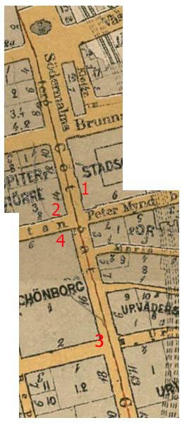
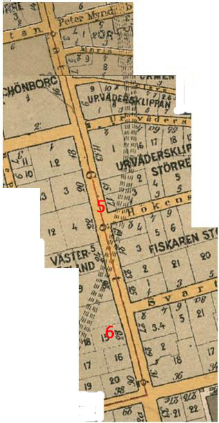
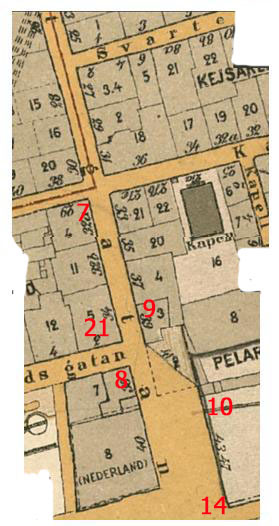
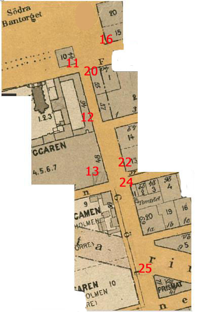
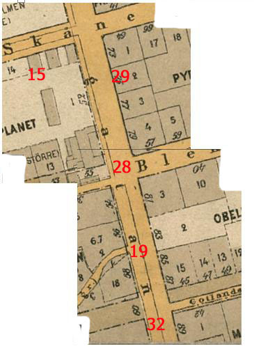
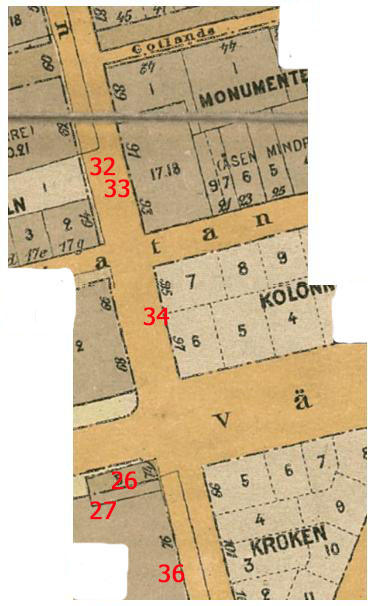
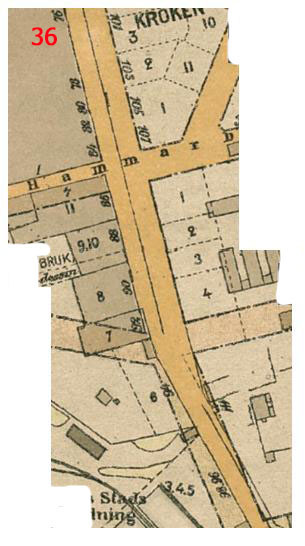
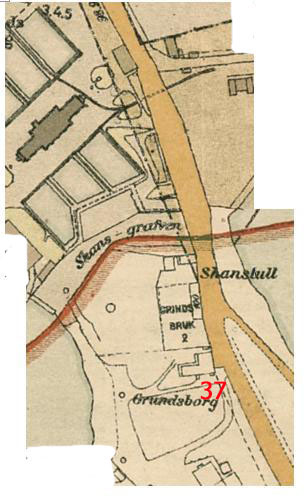

Södermalm i tid och rum
Hela Götgatan från norr till söder. Läses från vänster till höger. Karta från 1909. Klicka på siffrorna för bilder och information! Stockholmskartor hos Stockholmskällan







